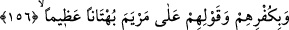
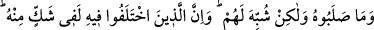

3- Eğer mallarının zekâtını vermezlerse orada kuraklık hüküm sürer. Hayvanlar
olmasa yağmur bile yağmazdı.
4- Allah’a ve Rasûlü’ne verdikleri ahdi bozarlarsa Allah onlara kendilerinden
olmayan bir düşman musallat eder de, o düşman ellerindekinin bir kısmını alır.
5- Liderleri Allah’ın kitâbı ile hükmetmez ve başkalarını Allah’ın indirdiklerine
tercih ederlerse Allah onların cezâlarını kendi içlerinde kılar.[201]
Mesnevi’de şöyle denilmiştir:
Vefasızlar yanına gitme, onlar
Yıkık köprü gibidir, uyan
Ahd ve misakı bozmak, ahmakların işidir
İman ve vefaya uymak muttakîlerin işi
Vefa toprağına bir yudumcuk döken kişiden
Devlet avı nasıl olur da kaçabilir?
156- Bir de inkâr etmelerinden ve Meryem’in üzerine büyük bir iftirâ
atmalarından;
Yahûdîleri cezâlandırmamızın bir sebebi de Hz. Îsâ’nın peygamberliğini inkar
etmeleri ve Hz. Meryem’e zinâ isnad etmeleridir. Çünkü bu isnad büyük bir iftira idi.
157- Ve «Allah elçisi Meryem oğlu Îsâ’yı öldürdük» demeleri yüzünden (onları
lânetledik). Halbuki onu ne öldürdüler, ne de astılar; fakat (öldürdükleri) onlara
Îsâ gibi gösterildi. Onun hakkında ihtilâfa düşenler bundan dolayı tam bir
kararsızlık içindedirler; bu hususta zanna uymak dışında hiçbir (sağlam) bilgileri
yoktur ve kesin olarak onu öldürmediler.
“Ve “Allah elçisi Meryem oğlu Îsâ’yı öldürdük” demeleri yüzünden (onları)
lânetledik). Yahûdîlerin Hz. Îsâ’yı Allah’ın Rasûlü diye nitelemeleri onunla alay etmek
içindir. Nitekim Peygamber Efendimiz’e de: “Ey kendisine zikir (Kur’an) indirilen.”
(Hicr, 15/6) diye hitapta bulunulmuştur. Yoksa onlar, Hz. Îsâ’ya düşmanlıkta ve onu
öldürmekte sözbirliği etmişken nasıl olur da ona Allah’ın Rasûlü derler? Demek ki bu,